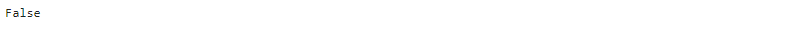

- 데이터 분석에 앞서 잘못된 부분을 찾아내고 이를 메꾸는 작업을 데이터 정리(data cleansing)이라고 합니다.
- 개별 데이터의 타입(type), 크기(length) 등이 잘못된 경우도 있고, 개별 데이터는 정상적이지만 이것들을 합쳤더니(merge) 결측치가 양산되거나 중복되는 경우도 있습니다.
- 분석이나 예측모델 생성시 문제의 원인이 되기 때문에 처음에 정리를 할 필요가 있습니다.
References
- 데이터 정리엔 다음 과정들이 포함됩니다.
- 데이터 타입 확인 및 처리:
chk_type() - 결측치 확인 및 처리:
show(),chk_nan() - 중복치 확인 및 처리:
pandas.DataFrame(, Series, Index).duplicated([{key_column}]).sum() - 병합데이터 일치 확인 및 처리:
cmp_dfs()
- 단일 column(list, array, pandas.Series 등)은 비교적 문제가 간단하지만, column이나 dataframe간에 문제가 생기면 신경이 곤두섭니다.
- 데이터 정리에 사용할 수 있는 함수를 몇 개 소개합니다.
1. 데이터 타입 확인
함수에 데이터를 넣을 때, 특정 타입만을 받아들여야 할 때가 있습니다.
타입이 잘못되면 어디선가 에러가 나지만, 깊은 곳에서 에러가 나면 원인을 찾기 힘드니 데이터를 받자마자 타입을 점검하는 것이 효과적입니다.
1
2
3
4
5
6
7
8
9
10
11
12
13
14
15
16
17
18
19
20
21
22
23
24
25
26
27
28
29
30
31
32
33
34
35
36
37
38# 변수(var)가 예상한 타입(typename)이면 True, 아니면 False 출력
def chk_type(var, typename):
"""
check type of variable
Parameters
------------------------
var : variable
typename : (str)type name
'array' is regarded as 'list' as well.
Returns
------------------------
True, if type of variable is typename
False, if not.
"""
typename_tol = []
typename_tol_arraylike = ["array", "list", "series"]
typename_tol_scalar = ["float", "int"]
# 'list' and 'array' are regarded as same type
if typename == "list":
typename_tol = typename_tol_arraylike
if typename == "array":
typename_tol = typename_tol_arraylike
if typename == "array-like":
typename_tol = typename_tol_arraylike
if typename == "scalar":
typename_tol = typename_tol_scalar
typename_tol.append(typename)
if any([(typetol in str(type(var))) for typetol in typename_tol]):
return True
else:
return False예시
1
2
3
4
5import numpy as np
x = np.arange(10) # type: numpy.ndarray
chk_type(x, 'array') # type test 통과
- 예상 타입과 실제가 다를 경우
1
chk_type(x, 'float') # type test 실패
2. 결측치 확인
- 결측치 관련하여 missingno라는 좋은 라이브러리가 있습니다.
- 여기에 대한 글은 많으니 본 글에서는 다루지 않겠습니다.
2.1. numpy array
- 결측치가 있는 numpy data를 만들고, 여기서 결측치의 갯수와 위치를 확인해 봅시다.
1
2
3
4
5
6
7
8from random import randint
x = np.arange(10, dtype='float') # 예제 데이터 만들기
for i in range(3): # 예제 데이터에 랜덤으로 결측치 3개 심기
idx = randint(0, 9)
x[idx] = np.nan
print(x)
- 결측치 index 확인
1
2idxnan = np.where(np.isnan(x))[0]
print(idxnan)
- 결측치를 제외한 데이터 추출
1
2x1 = np.delete(x, idxnan)
print(x1)
2.2. pandas DataFrame
- jupyter notebook에서 cell의 마지막 줄에 dataframe 이름만 입력하면 예쁜 table이 나오지만, cell 중간에 dataframe의 내용을 알아보기 위해
print(df)를 하면 숫자들의 나열로만 나와 알아보기 힘듭니다. - cell 중간에 dataframe을 출력해도 예쁘게 나올 함수를 간단하게 만들 수 있습니다.
1
2
3
4from IPython.core.display import HTML
def show(df):
display(HTML(df.to_html()))
- 10행 x 3열 DataFrame을 만들어서 테스트합시다.
1
2
3
4
5
6
7
8
9import pandas as pd
dim = 10
x = np.arange(dim, dtype='float')
y = np.arange(dim, dtype='float')
c = np.arange(dim, dtype='float')
df = pd.DataFrame({'X':x, 'Y':y, 'C':c})
show(df)
print(df)
- 일부 데이터를 랜덤하게 결측치로 만듭니다.
1
2
3
4
5
6for col in df.columns:
for i in range(3): # 컬럼별로 최대 3개를 결측시키겠습니다.
idx = randint(0, dim-1)
df.loc[idx, col] = np.nan
df
.plot명령으로 데이터를 출력하면 결측치를 제외하고 출력합니다.1
df.plot('X', 'Y', kind='scatter', s=50)
c='C', cmap='jet'를 추가해서 colormap까지 입혀보겠습니다.- 색상 결측치까지 반영되어 데이터가 사라집니다: (7, 7) 지점이 사라졌습니다.
1
df.plot('X', 'Y', c='C', kind='scatter', cmap='jet', s=50)
2.3. 결측치 합집합 제거
- 에러의 소지가 되는 결측치를 자동으로 제거해 주어서 좋지만, 데이터 손실량을 알 수 없습니다.
- 앞서 사용한
np.where()와np.delete()를 이용해서 결측치 위치를 확인하고 삭제할 수 있지만, 방심하면 엉뚱한 데이터끼리 붙어버립니다.1
2
3
4
5
6
7
8
9def delnan(arr):
idxnan = np.where(np.isnan(arr))[0]
return np.delete(arr, idxnan)
x1 = delnan(df['X'].tolist())
y1 = delnan(df['Y'].tolist())
c1 = delnan(df['C'].tolist())
plt.scatter(x1, y1, c=c1, cmap='jet', s=50)
- 보시다시피 네 개 밖에 없어야 할 점이 7개나 있고, y=x에서도 벗어납니다.
- 이럴 때는 독립된 결측치를 먼저 합집합으로 만든 후에 x, y, c에서 모두 삭제해야 합니다.
- 이 과정을 하나의 함수로 실행해 보겠습니다.
1
2
3
4
5
6
7
8
9
10
11
12
13
14
15
16
17
18
19
20
21
22
23
24
25
26
27
28
29
30
31
32
33
34
35
36
37
38
39
40
41from functools import reduce
def chk_nan(*args):
"""
returns null-free dataset.
Parameters
------------------------
*args : array-like data (list, numpy.ndarray, pd.Series)
"""
data_names = []
data = []
data_nanidx = []
data_new = []
for i, arg in enumerate(args):
# data should be array-like
assert chk_type(arg, 'list') or chk_type(arg, 'array') or chk_type(arg, 'series'), "Only array-like data is acceptable"
# data names
if chk_type(arg, 'series'):
data_names.append(arg.name)
else:
data_names.append(f'data_{i}')
# data
data.append(np.array(arg))
# null values
data_nanidx.append(np.where(np.isnan(arg))[0])
if len(data_nanidx[i]) > 0:
print(f'# WARNING {data_names[i]}: Number of null values={len(data_nanidx[i])} of {len(data[i])}.')
# union indices of null values
data_nanidx_all = reduce(lambda a, b: list(set(a) | set(b)), data_nanidx)
print(f'# Total number of missing data: {len(data_nanidx_all)}')
for i, datum in enumerate(data):
data_new.append(np.delete(data[i], data_nanidx_all))
return data_new assert를 사용해서'list', 'array', 'series'에만 적용되도록 했습니다.- 합집합을 구하는
set(A) | set(B)명령을 사용했으며, *args와reduce를 이용해서 입력받는 인자의 갯수에 무관하게 동작합니다.
아까 만들었던, 결측치가 있는
numpy.ndarray에 적용해 보겠습니다.1
2
3
4
5
6x2, y2, c2 = chk_nan(x, y, c)
# pandas Series도 입력 가능합니다.
# x2, y2, c2 = chk_nan(df['X'], df['Y'], df['C'])
plt.scatter(x2, y2, c=c2, cmap='jet', s=50)각 항의 결측치 갯수와 함께 전체적으로 몇 개의 데이터가 빠졌는지 알려줍니다.
plot도 정상적으로 출력됩니다.
- matplotlib은 자체적으로 결측치를 정상적으로 제거하고 plot을 수행합니다.
- 그러나
seaborn의distplot()은 결측치가 있으면 동작하지 않습니다. - 사실
chk_nan()은 plot보다 다른 작업시 결측치를 오류 없이 처리할 때 유용합니다.
3. 데이터 중복치 확인
pandas.DataFrame.duplicated
pandas.Seires.duplicated
pandas.Index.duplicated
- pandas는 중복값을 확인할 수 있는
.duplicated()제거하는.drop_duplicates()를 제공합니다. - 이와 관련된 설명은 웹에 많이 있으니 두 가지만 전달드리려 합니다.
1. 중복치 확인은 key 값을 넣고 하자 :
df.duplicated()의 기본값은 행 전체를 비교하므로 일부만 중복되면 다른 데이터로 간주합니다.
보통 데이터는 기준이 되는 key 값이 있으므로.duplicated([{key_column}])를 수행하는 것이 좋습니다.- 중복치 갯수는 뒤에
.sum()을 붙이면 간단합니다.
중복 여부를 True(1)/False(0)로 표기한 Series를 출력하기 때문입니다. - 중복치를 제거하기 전에 중복 데이터를 뽑아서 육안으로 검사를 하는 것이 좋습니다.
중복 자체가 뭔가 많이 잘못된 겁니다. 경험상 결측보다 중복이 있을 때 고생스런 일이 더 많았습니다.
2. .drop_duplicates()는 기본적으로 첫 데이터를 남긴다 :
- 데이터의 중복을 확인한 후에는 어떤 것을 지울지 선택해야 합니다.
- 중복치를 제거하는 명령으로
drop_duplicates()를 사용하는데,keep='first'가 기본 옵션입니다. - 여러 중복 데이터 중 첫 데이터만을 남기고 삭제하기 때문에 옳지 못한 선택일 수 있습니다.
- 중복 데이터의 feature를 종합적으로 살펴본 후 선택해야 합니다. 때로는 수동 삭제가 필요합니다.
- 아래는 제가 실제로 겪은 중복 데이터 사례입니다.
- 철거된 건물(붉은 실선)이 신축 건물(녹색 다각형)과 겹쳐 있습니다.
4. 병합데이터 일치 여부 확인
두 dataframe A와 B을 합칠 때 집합의 포함관계를 살펴야 합니다.
key feature 기준 $$ A=B $$라면 가장 좋겠으나, $$ A - B \ne \emptyset$$ 이면 B에 결측치가 생기기 때문입니다.
$$ A-B, B-A, A \cap B, A \cup B$$는 다음 함수로 한번에 확인 가능합니다.
1
2
3
4
5
6
7
8
9
10
11
12
13
14
15
16
17
18
19
20
21
22
23
24
25
26
27
28
29
30def cmp_dfs(df1, df2, key1, key2=None):
"""
check type of variable
Parameters
------------------------
df1, df2 : (pandas.DataFrame)
key1, key2 : (str) key column name of df1 and df2, respectively.
if key2 == None: key2 = key1
"""
if key2 == None: key2 = key1
assert key1 in df1.columns
assert key2 in df2.columns
dfkey1 = df1[key1].tolist()
dfkey2 = df2[key2].tolist()
df1_2 = list(set(dfkey1) - set(dfkey2))
df2_1 = list(set(dfkey2) - set(dfkey1))
df1n2 = list(set(dfkey1) & set(dfkey2))
df1u2 = list(set(dfkey1) | set(dfkey2))
print(f'# No. of df1= {df1.shape[0]}, df2= {df2.shape[0]}')
print(f'- No. of [df1 - df2] = {len(df1_2)}')
print(f'- No. of [df2 - df1] = {len(df2_1)}')
print(f'- No. of [df1 & df2] = {len(df1n2)}')
print(f'- No. of [df1 | df2] = {len(df1u2)}')
return df1_2, df2_1, df1n2, df1u2예제 DataFrame을 두 개 만들어서 비교해 보겠습니다.
1
2
3
4df1 = pd.DataFrame({'A':[1,2,3], 'B':[11,12,13]})
df2 = pd.DataFrame({'A':[1,2,4], 'D':[11,12,14]})
cmp_dfs(df1, df2, 'A')
- 차례대로 출력되는 $$ A-B, B-A, A \cap B, A \cup B$$ 를 변수로 저장해 활용할 수 있습니다.
cmp_dfs()함수는 key feature만 비교하므로, 좀 더 자세히 볼 여지가 있습니다.- 차집합을 버릴 것인지(
inner join), 결측치를 만들며 포함할 것인지(outer join). - 교집합은 key feature 외 다른 값들은 어떤지. 데이터의 수, 타입,내용을 모두 확인합니다.
- 차집합을 버릴 것인지(